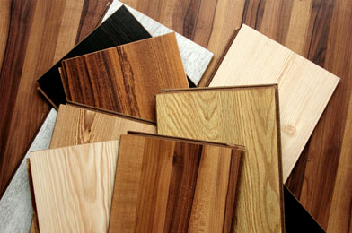

Where is formaldehyde used? Uses of Formaldehyde Formaldehyde is an essential building block chemical in the production of hundreds of items that improve everyday life. Little, if any, formaldehyde remains in the final products that consumers use. Advantage Building and Construction Formaldehyde-based resins are used to manufacture composite and engineered wood products used extensively in cabinetry, countertops, moldings, furniture, shelving, stair systems, flooring, wall sheathing, support beams and trusses and many other household furnishings and structures. Glues that use formaldehyde as a building block are exceptional bonding agents, delivering high-quality performance that is extremely economical. The wood products industry uses formaldehyde-based resins in a wide range of panel and board products, enabling sustainable use of forestry resources and minimizing waste. For example, composite wood panels are typically made from recovered wood waste that would otherwise be burned or disposed of in a landfill.  Health Care Applications Formaldehyde has a long history of safe use in the manufacture of vaccines, anti-infective drugs and hard-gel capsules. For example, formaldehyde is used to inactivate viruses so they don’t cause disease, such as the influenza virus in making the influenza vaccine. Personal Care and Consumer Products Formaldehyde-based chemistry is essential in the production of many personal care and consumer items. These products may contain formaldehyde-releasing ingredients, which act as a preservative to kill microorganisms and prevent growth of bacteria and other pathogens, extending product shelf life. Automobiles Formaldehyde technology helps make vehicles lighter and more energy efficient. Formaldehyde-based resins are used to make interior molded components and under-the-hood components that need to withstand high temperatures. These resins are also used in the production of highly durable exterior primers, clear coat paints, tire-cord adhesives, brake pads and fuel system components. For Preserving As formaldehyde is a strong disinfectant and tissue hardener, it's used for preserving biological and anatomical specimens. It's also used as an antiseptic in sterilising surgical instruments. Disadvantage For Health Formaldehyde can damage our digestive organs, in the beginning the first thing that you will feel is burning in the throat, until stomach. Another disease that would likely to happen is hard to swallow food. The worst things are internal bleeding and loss of consciousness. Formaldehyde is a probable human carcinogen (cancer causing subtance) Besides, at present different scientist found that formalin is the cause of different types of cancer and formalin is responsible for brain cancer. Some dishonest business mixes formalin in their foods and sell them in market. Consuming them people suffer from different diseases including cancer.